Generating data set
The main function is sim_groups, you need to define:
- A number of observations to draw.
- A number of groups. = = =
- And set a seed if you want to replicate your results.
library(klassets)
set.seed(123)
df <- sim_groups(n = 500, groups = 3)
plot(df)
Apply cluster algorithms
stats::kmeans
You can apply the stats::kmeans using apply_statskmeans_clust.
dfc1 <- apply_statskmeans(df, centers = 2)
plot(dfc1)
K-means: Basic {klassets} implementation
Or use a basic K-means implementation with:
set.seed(234)
dfc2 <- apply_kmeans(df, centers = 2, max_iteration = 6)
plot(dfc2)
What is the benefit? In the second one use a helper function kmeans_iterations to keep the iteration and see how the algorithm converges.
set.seed(234)
kmi <- kmeans_iterations(df, centers = 2, max_iteration = 6)
plot(kmi)
Now we can use gganimate package using object result from kmeans_iterations due have the classification for every point in every step:
kmi
#> $points
#> # A tibble: 2,988 × 6
#> iteration id group x y cluster
#> <int> <int> <chr> <dbl> <dbl> <fct>
#> 1 1 1 1 4.53 8.60 NA
#> 2 1 2 1 5.57 6.42 NA
#> 3 1 3 1 2.62 6.28 NA
#> 4 1 4 1 4.82 7.41 NA
#> 5 1 5 1 0.583 2.50 NA
#> 6 1 6 1 -5.49 8.30 NA
#> 7 1 7 1 3.59 9.44 NA
#> 8 1 8 1 -0.224 3.95 NA
#> 9 1 9 1 -2.62 10.7 NA
#> 10 1 10 1 -0.695 8.74 NA
#> # … with 2,978 more rows
#>
#> $centers
#> # A tibble: 12 × 4
#> iteration cluster cx cy
#> <int> <fct> <dbl> <dbl>
#> 1 1 A -4.67 5.85
#> 2 1 B 3.70 -7.21
#> 3 2 A 0.327 5.85
#> 4 2 B 7.26 -1.35
#> 5 3 A 0.170 5.29
#> 6 3 B 7.65 -1.30
#> 7 4 A 0.132 5.05
#> 8 4 B 7.83 -1.27
#> 9 5 A 0.137 4.76
#> 10 5 B 8.04 -1.24
#> 11 6 A 0.155 4.57
#> 12 6 B 8.19 -1.22
#>
#> attr(,"class")
#> [1] "klassets_kmiterations" "list"So you can take the output of this function data and use gganimate to make the animation using in the klassets home page. The code used in that animation can be found in the package using:
system.file("animation_kmeans_iterations.R", package = "klassets")
#> [1] "/home/runner/work/_temp/Library/klassets/animation_kmeans_iterations.R"